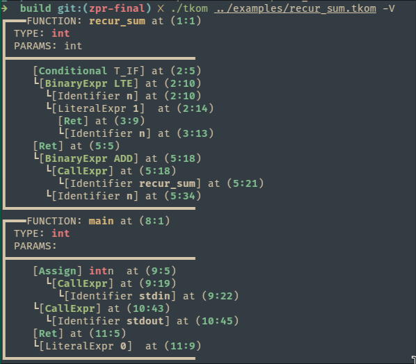

|
TKOM Programming Language and Interpreter
An implementation of a programming language for ZPR and TKOM projects
|

|
|
TKOM Programming Language and Interpreter
An implementation of a programming language for ZPR and TKOM projects
|
|
The project's goal was to implement a programming language that has:
The implemented language's syntax and more details on the grammar can be found here
The following tools have been used during implementation:
.clang-format).clang-tidy)Ensure you have the following installed:
Boost librariesjustcmakeThen, navigate to the repository's root directory, and just build.
The build files will be available at build/
The compiled binary ./tkom can be run from the build/ directory via:
When toggled, the -V flag will enable verbose logging, and will print out the parsed syntax tree on the screen:

The example source files are available at examples/. They show the language's general syntax and demonstrate mechanisms such as decorators and bind fronts.
A source file must consist of at least one function definition. A source file must contain a definition for a main function with the following signature:
An example main function will look like this:
Aside from user functions, a couple of builtin functions are available:
increment - [void::mut int] - increment by referenceincrement_v - [int::int] - increment by valuesqrt - [void::mut flt] - square root by referencesqrt - [flt::flt] - square root by valuestdout - [void::string] - printstdin - [string::string] - get input from userFull language description is available here
The project has been tested using Google Test. The tests can be run via just test (or ctest in build/)
The tests include:
The product is being continually tested and compiled on the following platforms:
More details can be seen here
If needed, the documentation can be built locally using
The results can be viewed at docs/html/index.html